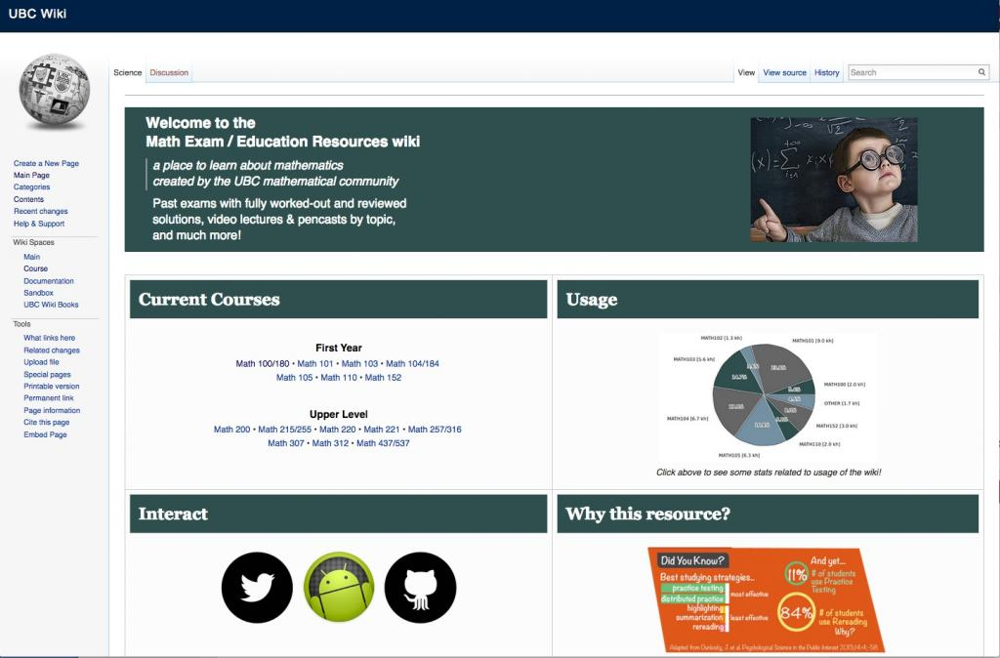

9.8 Trabalho em rede (e novidade)



9.8.1 Trabalho em rede e novidade no design de disciplinas
Em versões anteriores do modelo SECTIONS, a letra "N" representava a novidade (novelty). O objetivo consistia em reconhecer a relevância de os professores e formadores testarem novas abordagens para melhorar as suas práticas, neste caso, experimentando uma tecnologia inovadora e avaliando a sua eficácia. Adicionalmente, o mediatismo (hype) que acompanha os novos avanços tecnológicos gera frequentemente um contexto propício à inovação pedagógica. Esta questão mantém a sua relevância: sem experimentação e sem testar novas metodologias e tecnologias de ensino, não se verificará evolução na prática docente.
Contudo, a evolução recente das mídias sociais levanta outra questão de relevância crescente no momento de selecionar mídias:
quão importante se revela capacitar os aprendizes para trabalhar em rede para além da disciplina, conectando-se com especialistas, profissionais da área e cidadãos da comunidade? O curso ou a aprendizagem dos estudantes podem beneficiar destas ligações externas?
Se a resposta a esta pergunta for afirmativa, esta opção influenciará as mídias a selecionar, sugerindo especificamente a utilização de ferramentas de mídias sociais como blogs, wikis, Facebook, LinkedIn ou Google Hangout.
Apresentam-se a seguir cinco formas distintas através das quais as mídias sociais influenciam o trabalho em rede no planejamento de disciplinas.
9.8.2 Complementar as tecnologias de aprendizagem padronizadas
Alguns professores conjugam as mídias sociais destinadas ao trabalho em rede externo com as tecnologias institucionais padronizadas, tais como os LMS ou sistemas de vídeo. O LMS, cujo acesso é restrito por senha a professores e alunos inscritos, garante uma comunicação segura no âmbito do curso. A utilização de mídias sociais viabiliza conexões com o exterior (sendo possível a moderação de contributos pelo administrador do blog ou wiki do curso antes da sua publicação).
A título de exemplo, uma disciplina sobre política do Médio Oriente pode dispor de um fórum de debate interno focado na articulação de acontecimentos da atualidade com os temas programáticos da matéria; paralelamente, os estudantes podem gerir uma wiki pública que incentiva contributos de investigadores da área, estudantes externos e do público em geral. Consequentemente, alguns comentários e discussões podem transitar entre o fórum fechado e a plataforma pública.
9.8.3 Utilização exclusiva de mídias sociais em disciplinas com créditos letivos
Outros docentes optam por afastar-se por completo das tecnologias institucionais padronizadas, como os LMS e os sistemas de gravação de aulas, recorrendo exclusivamente a mídias sociais para gerir toda a dinâmica da disciplina. Por exemplo, a disciplina ETEC 522 da UBC recorre ao WordPress, vídeos do YouTube e podcasts para as intervenções de professores e alunos. De fato, a seleção de mídias sociais nesta disciplina altera-se anualmente, dependendo do foco temático do curso e dos novos desenvolvimentos da área. Jon Beasley-Murray, na Universidade da Colúmbia Britânica, estruturou uma disciplina inteira em torno da criação, pelos próprios estudantes, de um artigo de referência (featured-article) na Wikipédia sobre literatura latino-americana (Latin American literature WikiProject — ver Beasley-Murray, 2008).
9.8.4 Recursos de aprendizagem gerados pelos estudantes
Trata-se de uma dinâmica de particular interesse na qual os próprios estudantes utilizam mídias sociais para criar recursos de apoio aos seus colegas. A título de exemplo, estudantes de pós-graduação em matemática na UBC criaram a wiki Math Exam/Education Resources, que disponibiliza "exames anteriores com resoluções detalhadas e validadas, gravações de vídeo e pencasts por temas". Estes sites encontram-se abertos a qualquer estudante que necessite de apoio, e não apenas aos alunos da UBC. O projeto assenta na colaboração voluntária entre estudantes de pós-graduação em benefício dos alunos de licenciatura.
9.8.5 Grupos de aprendizagem autogeridos
Os cMOOCs constituem um exemplo claro de grupos de aprendizagem autogeridos que recorrem a mídias sociais tais como webinários, blogs e wikis.
9.8.6 Recursos educacionais abertos dinamizados por professores
O YouTube, em particular, é cada vez mais utilizado por docentes que pretendem partilhar o seu conhecimento através da criação de recursos acessíveis a qualquer pessoa. O exemplo de referência continua a ser a Khan Academy, registando-se contudo muitos outros, como o OpenCourseWare do MIT. Os xMOOCs constituem outro exemplo. Esta temática será analisada no Capítulo 11.
Reitera-se que a decisão de adotar um modelo de "ensino aberto" constitui uma opção de pendor filosófico ou de valores letivos, e não apenas tecnológica, embora a tecnologia atual viabilize e estimule esta filosofia.
9.8.7 Questões para ponderação
- Quão importante se revela capacitar os aprendizes para trabalhar em rede para além da disciplina, conectando-se com especialistas, profissionais da área e cidadãos da comunidade? O curso ou a aprendizagem dos estudantes podem beneficiar destas ligações externas?
- Se esta ligação externa se revelar importante, qual a melhor via para a implementar? Utilizar mídias sociais de forma exclusiva? Integrá-las com as tecnologias padronizadas da disciplina? Delegar a responsabilidade de concepção e administração nos estudantes?
Referências
Beasley-Murray, J. (2008) Was introducing Wikipedia to the classroom an act of madness leading only to mayhem if not murder? Wikipedia, March 18
Atividade 9.8 Trabalho em rede (e novidade)
- De que forma poderia utilizar as mídias sociais numa das suas disciplinas para permitir aos estudantes estabelecerem ligações com o exterior? Como beneficiaria a sua aprendizagem? Quais seriam os riscos a par das vantagens?
Para ouvir o meu feedback sobre este tema, clique no podcast abaixo:
Um elemento de áudio foi excluído desta versão do texto. Você pode ouvi-lo on-line aqui: https://pressbooks.bccampus.ca/teachinginadigitalagev2/?p=246